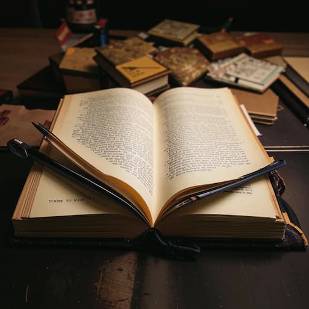

Написание книги — это не просто процесс, это настоящее искусство, в котором переплетаются воображение, эмоции и личный опыт. Каждый автор вносит в свою работу частичку себя, создавая уникальный мир, который может вдохновить, развлекать или даже изменить жизнь читателя. Чтобы создать книгу, важно понимать, что это не только технический процесс, но и глубокое творчество.
В начале пути стоит обратить внимание на свою идею. Она может возникнуть в самых неожиданных местах — во время прогулки, в разговоре с друзьями или даже во сне. Позвольте своей фантазии разгуляться, не ставьте рамок. Запишите все мысли, которые приходят вам в голову, не критично воспринимая их. Это ваш первый шаг на пути к созданию чего-то удивительного.
Когда идея оформится в более четкую концепцию, начнется пора исследования. Погружение в тему, которую вы хотите раскрыть, может открыть новые горизонты. Чтение книг, просмотр фильмов или общение с людьми, имеющими опыт в данной области, помогут вам углубить свои знания и добавить достоверности вашему повествованию. Каждый элемент исследования обогатит вашу историю, сделает её более многослойной.
Теперь пришло время начать писать. Не бойтесь погружаться в процесс, позволяйте словам течь свободно. Важно помнить, что первый черновик не должен быть идеальным. Дайте себе возможность ошибаться, экспериментировать со стилем и строить сюжет. В этом этапе творчество должно быть приоритетом — не останавливайтесь на достигнутом, дайте волю своим эмоциям и идеям.
После завершения первого варианта книги начнётся время для редактирования. Это этап, когда творческое начало встречается с критическим мышлением. Пересматривайте текст, ищите способы улучшить его, делайте акценты на ключевых моментах и эмоциях, которые хотите донести до читателя. Возможно, вам потребуется несколько раз переписать некоторые части, и это нормально. Важно, чтобы каждая строка отражала вашу мысль и стиль.
Когда вы будете довольны результатом, наступит момент публикации. Это может быть как традиционное издательство, так и самиздат. Как бы вы ни выбрали, важно помнить, что ваша работа заслуживает быть услышанной. И после публикации не забывайте о продвижении. Делитесь своей книгой с миром, общайтесь с читателями, участвуйте в мероприятиях — это ваш шанс создать сообщество вокруг вашего творчества.
Написание книги — это не просто задача, это путешествие в мир воображения, где каждый шаг важен. Позвольте себе быть уязвимым, открытым и искренним. Ваша история уникальна, и она ждет, чтобы быть рассказанной. Не бойтесь мечтать и следовать за своей мечтой — ведь именно так создаются настоящие литературные шедевры.